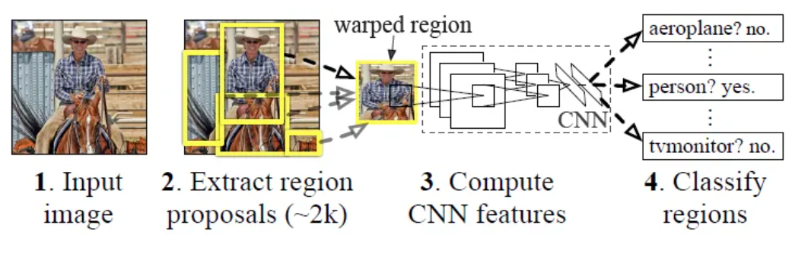
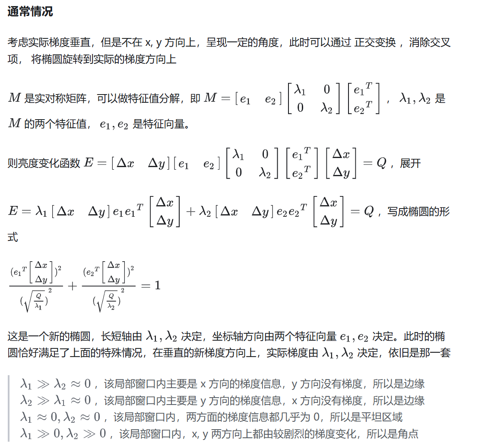
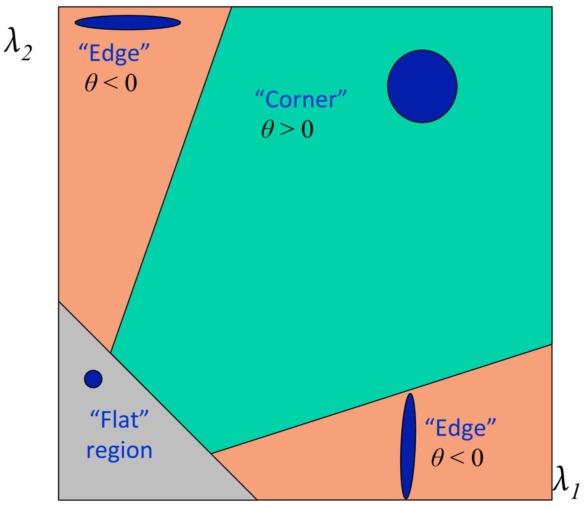
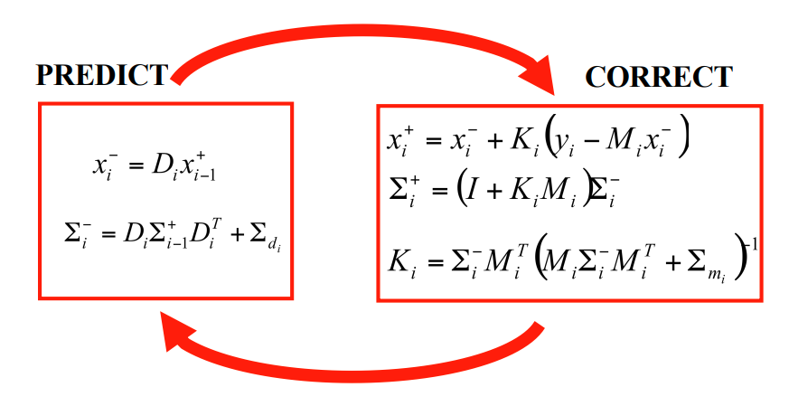
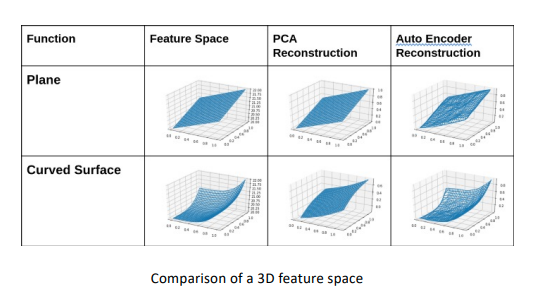

线上cv课程期末复习笔记
1. Object detection
面临的问题：
- Object of interest might have different spatial locations within the image
- They also have different aspect ratios
- A large number of regions would need to be tested
RCNN:

方法：
候选区域生成： 一张图像生成1K~2K个候选区域 （采用Selective Search 方法）
特征提取： 对每个候选区域，使用深度卷积网络提取特征 （CNN）
类别判断： 特征送入每一类的SVM 分类器，判别是否属于该类
位置精修： 使用回归器精细修正候选框位置
缺点：
- Slow and hard for real-time detection
- Difficult to optimise
YOLO：
- 缺点：
- Weak at detecting groups of objects, YOLO is really designed for single object detection
- YOLO cannot detect new or unusual shapes
- Loss function treats errors for small and large bounding boxes the same. This creates incorrect localisations
- 缺点：
2. Revisiting Segmentation
upsampling:
- Nearest Neighbor
- Bed of NailsTechnique
- Max Unpooling
- Bilinear Interpolation
- Bicubic Interpolation
- Lanczos Interpolation
数据增强方法：
- Image rotations
- Conversions in colour space
- Small affine transformations(平移旋转缩放)
U-Net limitation:
- U-Net 可能低估某些形状，特别是凹形细胞
- 距离变换
- 分离细胞簇效果不佳
- 非极大值一直
- 其他可能方法：
- 星型多边形
- 形状表示预测
- 对象概率（使用距离变换来计算每个像素到最近背景像素的距离）
- U-Net 可能低估某些形状，特别是凹形细胞
3. Visual Motion
两种方法（基于梯度）：
- Horn-Schunk（全局平滑假设）
- Lukas Kanade(即所有的相邻像素有相似的行动。也即在目标像素周围m×m的区域内，每个像素均拥有相同的光流矢量)
检测边缘：


SIFT：
- 尺度空间极值检测（Scale-Space Extrema Detection）
- 在不同尺度下检测图像中的关键点。通过构建高斯金字塔，对图像进行多尺度分析。
- 在高斯模糊图像中，计算差分高斯（Difference of Gaussian, DoG），检测局部极值点。
- 关键点定位（Keypoint Localization）
- 精确定位关键点，并去除不稳定的边缘响应和低对比度的关键点。
- 方向分配（Orientation Assignment）
- 为每个关键点分配一个或多个方向，以确保特征描述子具有旋转不变性。
- 关键点描述（Keypoint Descriptor）
- 在关键点周围的局部区域内，计算梯度方向直方图，形成特征描述子
- 尺度空间极值检测（Scale-Space Extrema Detection）
总结：
- Similar to bottom-up segmentation the analysis of visual motion is not application specific
- The image scale needs to be selected appropriately to obtain the appropriate information
4. Object Tracking
Mean-shift tracking:
根据概率密度算质心，然后偏移
步骤：
- 预测
- 数据关联
- 校正

总结：
- Local optimization/search – Mean shift tracking depends on local initialization
- Global optimization/search – A graph-based approach effectively enforces a set of global constraints
- Stochastic optimization – State estimation based of sequential estimation techniques
- Deep learning – learn features for training and data association from data
5. Autoencoders
特点：
- Autoencoders effectively provide a means of dimensionality reduction but do not produce an orthogonal basis (i.e. a representation that decorrelates the signal
- For high-dimensional data autoencoders are computationally more efficient
- Autoencoders are prone to overfitting due to a high number of parameters

Regularized autoencoders
正则化自编码器通过在损失函数中添加正则化项，能够引导模型学习特定的属性
- 稀疏自编码器
- 去噪自编码器
- 收缩自编码器
VAE
encoder来生成几组不同的近似正态分布，decoder解码